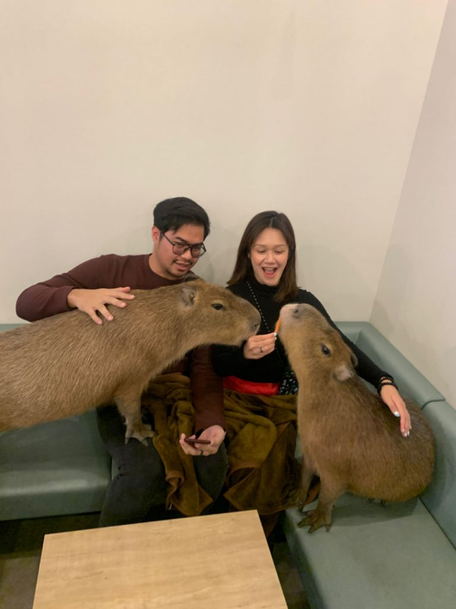

Sobre nós

Bem-vindo ao nosso cantinho especial: o primeiro e único Café de Capivaras do Brasil! 🤎 Inspirado nos famosos cafés temáticos do Japão, como os que fazem sucesso em cidades como Tóquio e Osaka, trouxemos para o Brasil uma experiência inédita que une aconchego, natureza e o carisma irresistível das capivaras.
Nosso espaço foi cuidadosamente planejado para proporcionar momentos únicos de conexão e tranquilidade. Assim como nos tradicionais cafés de animais japoneses. Tendência que começou com os famosos neko cafés. Criamos um ambiente seguro, confortável e supervisionado, onde o bem-estar das capivaras é nossa prioridade absoluta. Aqui, cada visita é uma oportunidade de desacelerar, relaxar e viver algo verdadeiramente diferente.
Além da experiência encantadora com nossas estrelas de quatro patas, oferecemos um cardápio especial com cafés artesanais, doces caseiros e opções salgadas preparadas com todo carinho. Queremos que cada cliente se sinta em casa, aproveitando um café delicioso enquanto desfruta da companhia tranquila e simpática das capivaras.
Venha conhecer o primeiro Café de Capivaras do Brasil e descubra por que essa tendência conquistou o Japão e agora está pronta para conquistar você também. Uma experiência fofa, acolhedora e inesquecível espera por você! ☕✨